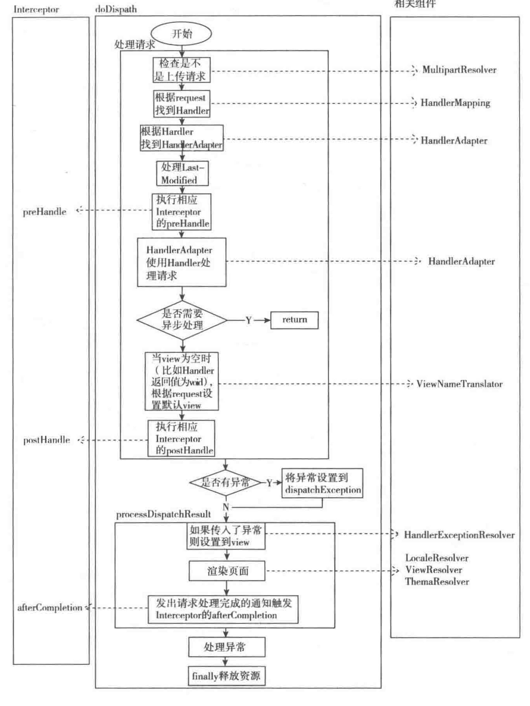

ContextLoaderListener
WebMvcConfigurer
WebMvcConfigurationSupport
@EnableWebMvc
@Bean
HttpServlet
AbstractHandlerMethodMapping 继承 InitailizeBean
DispatcherServlet 是springMVC 最核心的类，整个处理过程的顶层设计都在这里面，所以一定要把这个类彻底的搞明白哇。
通过对 FrameworkServlet 的分析，我们知道 DispatcherServlet 里面执行处理的入口是 doService，不过 doService 并没有直接进行处理，而是交给了 doDispatch 进行具体的处理，在 doDispatch处理前 doService 做了一些事情：判断是不是 include 请求，如果是则对 request 的 Attribute 做个快照备份，等 doDispatch 处理完之后进行还原
protected void doService(HttpServletRequest request, HttpServletResponse response) throws Exception {
logRequest(request);
// Keep a snapshot of the request attributes in case of an include,
// to be able to restore the original attributes after the include.
Map<String, Object> attributesSnapshot = null;
// 当是 include 请求的时候，对request 的 attribute 进行快照备份
if (WebUtils.isIncludeRequest(request)) {
attributesSnapshot = new HashMap<>();
Enumeration<?> attrNames = request.getAttributeNames();
while (attrNames.hasMoreElements()) {
String attrName = (String) attrNames.nextElement();
if (this.cleanupAfterInclude || attrName.startsWith(DEFAULT_STRATEGIES_PREFIX)) {
attributesSnapshot.put(attrName, request.getAttribute(attrName));
}
}
}
// 对 request 设置一些属性
// Make framework objects available to handlers and view objects.
request.setAttribute(WEB_APPLICATION_CONTEXT_ATTRIBUTE, getWebApplicationContext());
request.setAttribute(LOCALE_RESOLVER_ATTRIBUTE, this.localeResolver);
request.setAttribute(THEME_RESOLVER_ATTRIBUTE, this.themeResolver);
request.setAttribute(THEME_SOURCE_ATTRIBUTE, getThemeSource());
if (this.flashMapManager != null) {
FlashMap inputFlashMap = this.flashMapManager.retrieveAndUpdate(request, response);
if (inputFlashMap != null) {
request.setAttribute(INPUT_FLASH_MAP_ATTRIBUTE, Collections.unmodifiableMap(inputFlashMap));
}
request.setAttribute(OUTPUT_FLASH_MAP_ATTRIBUTE, new FlashMap());
request.setAttribute(FLASH_MAP_MANAGER_ATTRIBUTE, this.flashMapManager);
}
try {
// 核心流程
doDispatch(request, response);
} finally {
if (!WebAsyncUtils.getAsyncManager(request).isConcurrentHandlingStarted()) {
// Restore the original attribute snapshot, in case of an include.
// 还原 request 快照的属性
if (attributesSnapshot != null) {
restoreAttributesAfterInclude(request, attributesSnapshot);
}
}
}
}
在doDispatch 方法中最核心的代码只有4句，他们的任务分别是：1、根据request找到 handler 2、根据handler 找到对应的 handlerAdapter 3、用 HandlerAdapter 处理 Handler 4、调用 processDispatchResult 方法处理上面处理之后的结果（包含找到 View 并渲染输出刚给用户）
mappedHandler = getHandler(processedRequest);
HandlerAdapter ha = getHandlerAdapter(mappedHandler.getHandler());
mv = ha.handle(processedRequest, response, mappedHandler.getHandler());
processDispatchResult(processedRequest, response, mappedHandler, mv, dispatchException);
此外再加上两个过滤器处理逻辑：
mappedHandler.applyPreHandle(processedRequest, response)
mappedHandler.applyPostHandle(processedRequest, response, mv);
这里需要 解释三个概念HandlerMapping、Handler、HandlerAdapter，通俗的来说的话可以这样理解，Handler 是用来干活的工具，HandlerMapping是根据需要干的活找到相应的工具，HandlerAdapter 是使用工具干活的人。
它直接对应着 MVC 中的 Controller 层，它具体表现形式有很多，可以是类，也可以是方法，我们在开发 Controller 的时候 经常会使用到的 注解 @RequestMapping 的所有方法都可以看成一个个的Handler。
用来查找 Handler，在springMVC 中会处理很多请求，每个请求都需要一个Handler 来处理，具体接收到一个请求后使用哪一个Handler来处理呢，这就是 HandlerMapping 要做的事情。 HandlerMapping
单单从名字来看的话 它就是一个Adapter 一个 适配器，因为SpringMVC 中的 Handler 可以说是任意的形式，只要能处理请求就 OK，但是 Servlet 需要的处理方法的结构却是固定的，都是 request 和 responsse 为参数的方法(如doService 方法)，怎么让固定的 Servlet 处理方法调用灵活的 Handler 来进行处理，这就是 HandlerAdapter 要做的事情。 HandlerAdapter
doDispatch
protected void doDispatch(HttpServletRequest request, HttpServletResponse response) throws Exception {
HttpServletRequest processedRequest = request;
HandlerExecutionChain mappedHandler = null;
boolean multipartRequestParsed = false;
// 异步管理
WebAsyncManager asyncManager = WebAsyncUtils.getAsyncManager(request);
try {
ModelAndView mv = null;
Exception dispatchException = null;
try {
// 检查是不是文件上传请求，如果是上传请求则将 request 转换为 MultipartHttpServletRequest，并将multipartRequestParsed 设置为true
processedRequest = checkMultipart(request);
multipartRequestParsed = (processedRequest != request);
// 根据request 查找得到 Handler（HandlerExecutionChain）
mappedHandler = getHandler(processedRequest);
if (mappedHandler == null) {
noHandlerFound(processedRequest, response);
return;
}
// 获取跟 Handler 匹配的 HandlerAdapter 对象
HandlerAdapter ha = getHandlerAdapter(mappedHandler.getHandler());
// 处理 GET、HEAD请求的 Last-Modified
String method = request.getMethod();
boolean isGet = "GET".equals(method);
if (isGet || "HEAD".equals(method)) {
long lastModified = ha.getLastModified(request, mappedHandler.getHandler());
if (new ServletWebRequest(request, response).checkNotModified(lastModified) && isGet) {
return;
}
}
// 执行相应的 Interceptor 的 preHandle 前置过滤器，如果返回 false 则方法结束，直接返回
if (!mappedHandler.applyPreHandle(processedRequest, response)) {
return;
}
// HandlerAdapter 使用 Handler 处理请求，Controller 就是在这个地方执行的
mv = ha.handle(processedRequest, response, mappedHandler.getHandler());
// 如果需要异步处理直接返回
if (asyncManager.isConcurrentHandlingStarted()) {
return;
}
applyDefaultViewName(processedRequest, mv);
// 执行 相应 Intercetor 的 postHandle 中置过滤器
mappedHandler.applyPostHandle(processedRequest, response, mv);
} catch (Exception ex) {
// 参见 @ControllerAdvice 用来处理的异常信息
dispatchException = ex;
} catch (Throwable err) {
// As of 4.3, we're processing Errors thrown from handler methods as well,
// making them available for @ExceptionHandler methods and other scenarios.
dispatchException = new NestedServletException("Handler dispatch failed", err);
}
// 处理返回结果，包括异常处理、渲染页面、发出完成通知触发 Intercetor 的 afterCompletion，在异常处理方法内使用了 HandlerExceptionResolver
processDispatchResult(processedRequest, response, mappedHandler, mv, dispatchException);
} catch (Exception ex) {
triggerAfterCompletion(processedRequest, response, mappedHandler, ex);
} catch (Throwable err) {
triggerAfterCompletion(processedRequest, response, mappedHandler,
new NestedServletException("Handler processing failed", err));
} finally {
// 判断是否执行异步请求
if (asyncManager.isConcurrentHandlingStarted()) {
// Instead of postHandle and afterCompletion
if (mappedHandler != null) {
mappedHandler.applyAfterConcurrentHandlingStarted(processedRequest, response);
}
} else {
// 删除上传请求的资源
if (multipartRequestParsed) {
cleanupMultipart(processedRequest);
}
}
}
}
在源码中 方法的开头就定义了几个变量
HttpServletRequest processedRequest：实际处理时所用的 request，如果不是上传请求，则直接使用接收到的 request，否则封装为上传类型的 request
HandlerExecutionChain mappedHandler：处理请求的处理器链（包含处理器和对应的 Interceptor）
boolean multipartRequestParsed：是不是上传请求的标志
ModelAndView mv：封装Model 和View的容器，此变量在整个 springMVC 处理的过程中承担着非常重要的角色
Exception dispatchException：处理请求过程中抛出的异常。需要注意的是它并不包含渲染过程抛出的异常
protected HandlerExecutionChain getHandler(HttpServletRequest request) throws Exception {
// handlerMapping 实例
if (this.handlerMappings != null) {
for (HandlerMapping mapping : this.handlerMappings) {
// 获取 HandlerMethod 和 过滤器链的包装类 HandlerExecutionChain
HandlerExecutionChain handler = mapping.getHandler(request);
if (handler != null) {
return handler;
}
}
}
return null;
}
private void processDispatchResult(HttpServletRequest request, HttpServletResponse response,
@Nullable HandlerExecutionChain mappedHandler, @Nullable ModelAndView mv,
@Nullable Exception exception) throws Exception {
boolean errorView = false;
// 如果异常不为空
if (exception != null) {
if (exception instanceof ModelAndViewDefiningException) {
logger.debug("ModelAndViewDefiningException encountered", exception);
mv = ((ModelAndViewDefiningException) exception).getModelAndView();
} else {
Object handler = (mappedHandler != null ? mappedHandler.getHandler() : null);
mv = processHandlerException(request, response, handler, exception);
errorView = (mv != null);
}
}
// Did the handler return a view to render?
if (mv != null && !mv.wasCleared()) {
render(mv, request, response);
if (errorView) {
WebUtils.clearErrorRequestAttributes(request);
}
} else {
if (logger.isTraceEnabled()) {
logger.trace("No view rendering, null ModelAndView returned.");
}
}
if (WebAsyncUtils.getAsyncManager(request).isConcurrentHandlingStarted()) {
// Concurrent handling started during a forward
return;
}
if (mappedHandler != null) {
// 发出请求处理完成的通知，触发Intercetor的 afterComplete 方法
mappedHandler.triggerAfterCompletion(request, response, null);
}
}
在processHandlerException方法中 使用了 HandlerExceptionResolver(在初始化 initStrategies 方法中设置过)
渲染页面具体在render方法中执行，render中首先对 responses 设置了 local，过程稿中使用到了 LocalResolver（在 initStrategies 中初始化），然后判断 View 如果是 String 类型则调用 resolveViewName 方法刁永刚 ViewResolver 得到实际的 View，最后调用 View 的render方法 对页面进行具体渲染，渲染的过程中使用到了 ThemeResolver。
最后通过 mappedHanler 的 triggerAfterCompletion 方法触发 interceptor 的 afterCompletion 方法，这里的 interceptor是按反方向执行的